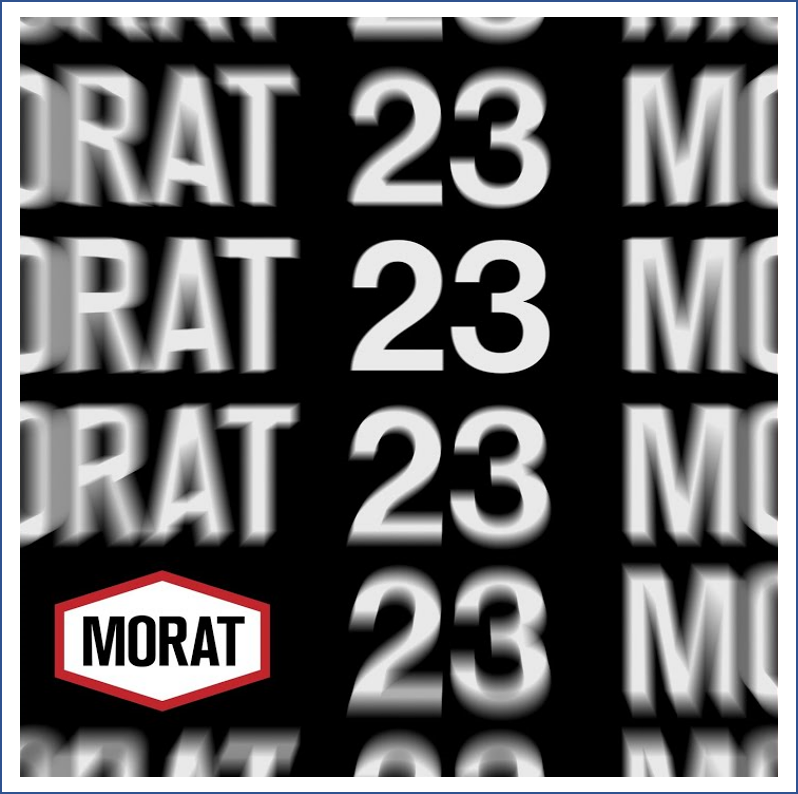
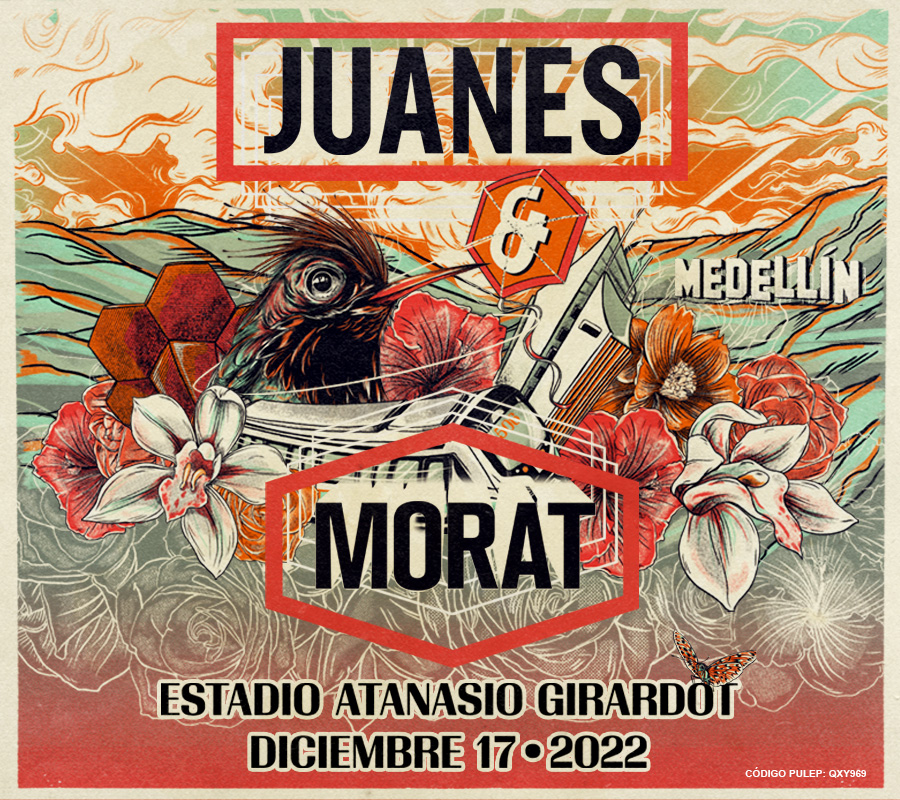

Escucha su último lanzamiento


Morat y Juanes En Concierto

Gracias al éxito en sus dos colaboraciones (Besos en Guerra y 506), Morat y Juanes han decidido fusionar sus talentos en un concierto, el cuál se llevará a cabo el siguiente 17 de diciembre en el estadio Atanasio Girardot de Medellín, Colombia.
Se les augura un gran éxito, ya que en 24 horas tenían Sold Out. Esperemos que esto los motive a hacer más conciertos juntos.